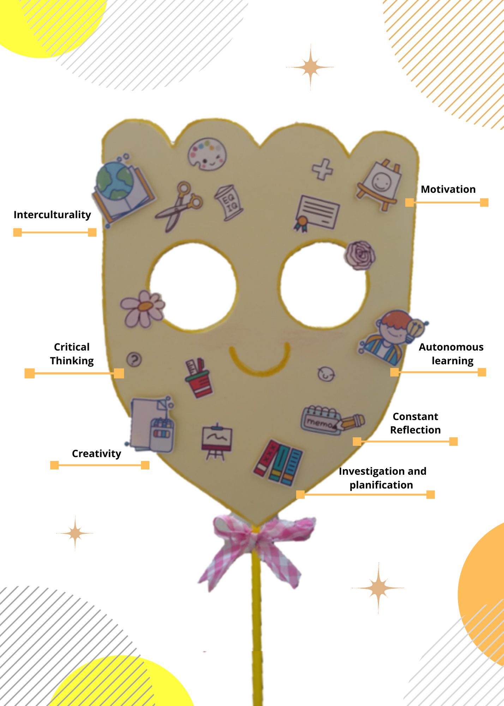
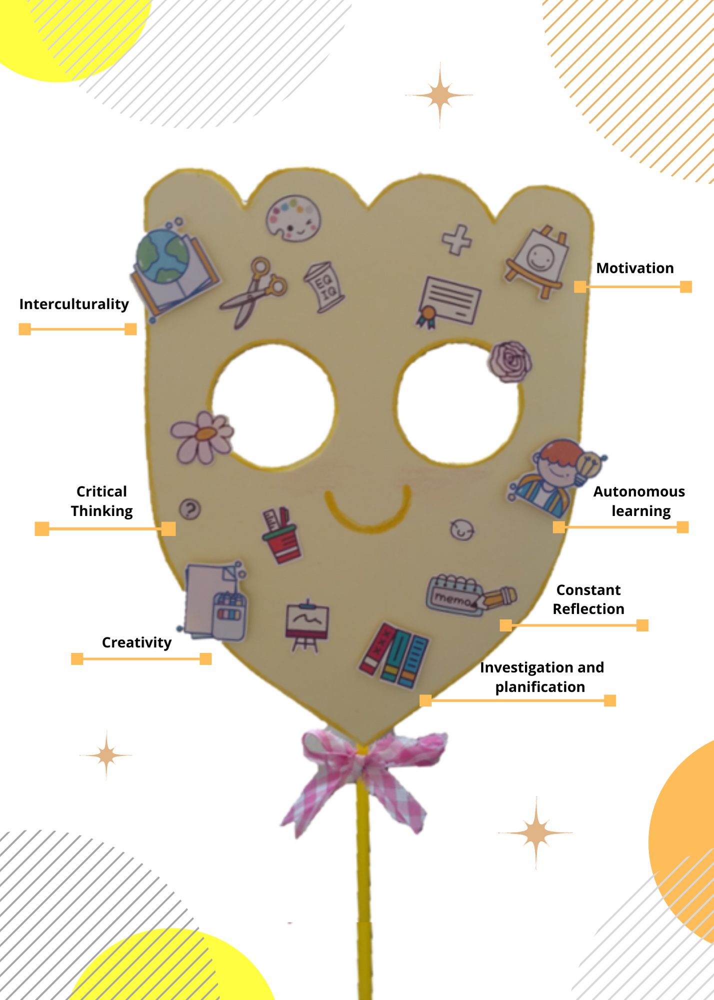

My teacher self in a mask.
Creating something new is always exciting for me. This time in didactics class we had the opportunity to design a mask to represent our teaching identity and later share it with our classmates and teacher.
Through my mask I wanted not only to show my teaching self but also a bit of my persona and personal style. I wanted to maintain a pastel color palette because apart from being my favorite colors they give a clean and clear appearance, something that I like to keep in my acaemic products, The mask contains some elements in the relief, because they are those that highlight in my reflection of teaching identity.
 Each element has a reason and meaning. My mask speaks of a teacher who cares about the development of her students not only in an academic or social way but also in a integral way. I see students as capable and present entities in society. Therefore, I believe that teaching should provide them useful tools in relevance of the world in which they are, but that this process should not be rigid and boring. I believe that involving the student in collaborative work where they can explore and show their potential while having fun is key to their educational process. Although being an educator is not easy, because being human makes variables never a straight line, I believe that through teaching you are able to make a positive impact on the life of others, and to do so it is necessary constant reflection, empathy and growth inside and outside of the classroom.
Before creating this mask I did not see myself as a teacher, even though I already have teaching experience, I looked my self more like someone who is learning and just follows what is required. I do not mean that I already know everything about teaching and that I do not need to be instructed, because even after I get my diploma I must continue studying, but now I can confidently say that I am this kind of teacher who althought is constantly being evaluated and changing is one step closer to becoming that positive change/impact entity I dreamed of as a child.
Sharing with my colleagues was a great experience that almost brings me to tears, as I had the joy of sharing with my closest classmates and friends our beliefs and, in a subtle way, our future vision of teaching. It was great to discover that we shared common elements not only in our masks but in the way we view teaching and work. Now I understand why we work so well together c: Besides, seeing yourself from others perspective is a great exercise of introspection, self-confidence and development of empathy for each other.
Hopefully in the future I can count on them as a team. Where research and innovation in the field is present thus I think the best job you can do is to inspire others to do the same.
Through my mask I wanted not only to show my teaching self but also a bit of my persona and personal style. I wanted to maintain a pastel color palette because apart from being my favorite colors they give a clean and clear appearance, something that I like to keep in my acaemic products, The mask contains some elements in the relief, because they are those that highlight in my reflection of teaching identity.
 Each element has a reason and meaning. My mask speaks of a teacher who cares about the development of her students not only in an academic or social way but also in a integral way. I see students as capable and present entities in society. Therefore, I believe that teaching should provide them useful tools in relevance of the world in which they are, but that this process should not be rigid and boring. I believe that involving the student in collaborative work where they can explore and show their potential while having fun is key to their educational process. Although being an educator is not easy, because being human makes variables never a straight line, I believe that through teaching you are able to make a positive impact on the life of others, and to do so it is necessary constant reflection, empathy and growth inside and outside of the classroom.
Before creating this mask I did not see myself as a teacher, even though I already have teaching experience, I looked my self more like someone who is learning and just follows what is required. I do not mean that I already know everything about teaching and that I do not need to be instructed, because even after I get my diploma I must continue studying, but now I can confidently say that I am this kind of teacher who althought is constantly being evaluated and changing is one step closer to becoming that positive change/impact entity I dreamed of as a child.
Sharing with my colleagues was a great experience that almost brings me to tears, as I had the joy of sharing with my closest classmates and friends our beliefs and, in a subtle way, our future vision of teaching. It was great to discover that we shared common elements not only in our masks but in the way we view teaching and work. Now I understand why we work so well together c: Besides, seeing yourself from others perspective is a great exercise of introspection, self-confidence and development of empathy for each other.
Hopefully in the future I can count on them as a team. Where research and innovation in the field is present thus I think the best job you can do is to inspire others to do the same.